Las seis formas principales de expresar duración, inicio y "hace tanto" en español neutral latinoamericano.
Velocidad 🔊
NOTA*Mental hook · tense. For ongoing duration, Spanish uses the presente where English uses the present perfect. Shift to the imperfecto (and hace → hacía) for the past parallel — "had been ___ for".
NOTA*Mental hook · structure.desde marks where something begins; the main clause extends to the reference moment — usually now, sometimes a past anchor. For closed, bounded periods, use durante / por / Ø instead.
①
desde
"SINCE" — A STARTING POINT
Marks a specific starting point in time. The main clause extends from that point to now (or to a past anchor).
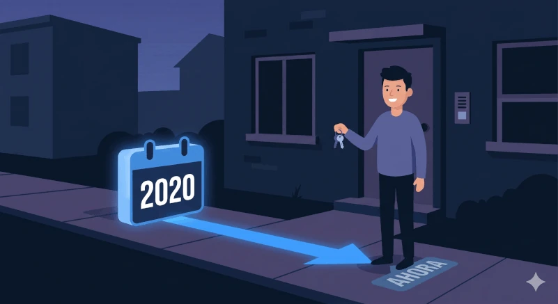
Presente
Vivo aquí desde 2020.
I have lived here since 2020.
Imperfecto · past ongoing
Vivía allí desde 2010 cuando lo conocí.
I had been living there since 2010 when I met him.
②
hace + tiempo + pretérito
"AGO" — COMPLETED PAST EVENT
"ago" — a single, completed past event. For closed, bounded periods of past activity, use durante / por / Ø instead.
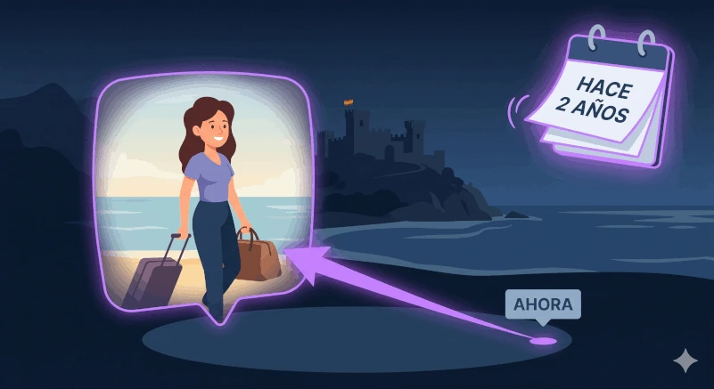
Pretérito · tiempo primero
Hace dos años viajé a España.
Two years ago I traveled to Spain.
Pretérito · tiempo al final
Viajé a España hace dos años.
I traveled to Spain two years ago.
③
desde hace
"FOR" — ONGOING DURATION
"for" with ongoing duration. The verb comes before the time phrase.
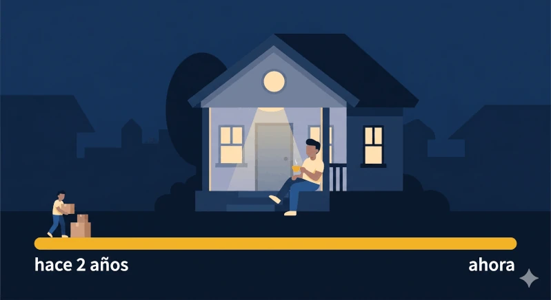
Presente
Vivo aquí desde hace dos años.
I have lived here for two years.
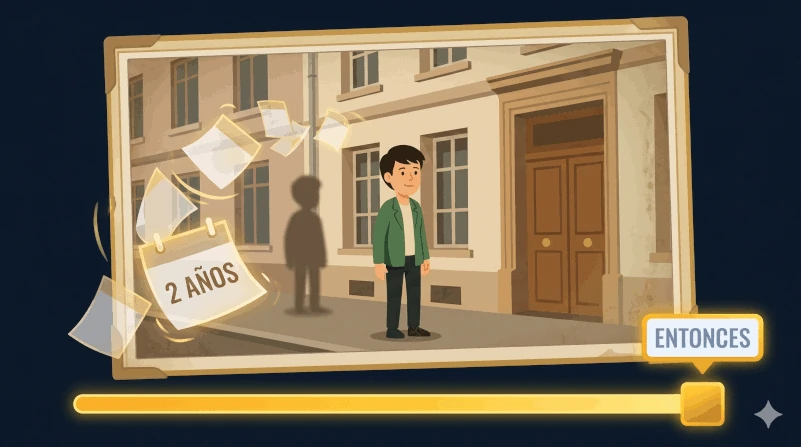
Imperfecto · "had been ___ for"
Vivía allí desde hacía dos años.
I had been living there for two years.
Negativo · "haven't ___ for"
No la veo desde hace tres meses.
I haven't seen her in three months.
Variante rioplatense · drop desde (informal)
En el español del Río de la Plata, es muy común eliminar desde y dejar solo hace + tiempo en estas mismas estructuras. Es informal pero está totalmente aceptado en el habla cotidiana.
Negativo · más común
No la veo hace tres meses.
I haven't seen her in three months.
Presente
Vivo aquí hace dos años.
I have lived here for two years.
Imperfecto · menos común
Vivía allí hacía dos años.
I had been living there for two years.
④
hace … que
TIME FIRST, THEN VERB
El tiempo viene antes del verbo. The meaning depends on the tense after que: presente = "for", imperfecto = "had been ___ for", pretérito = "ago".
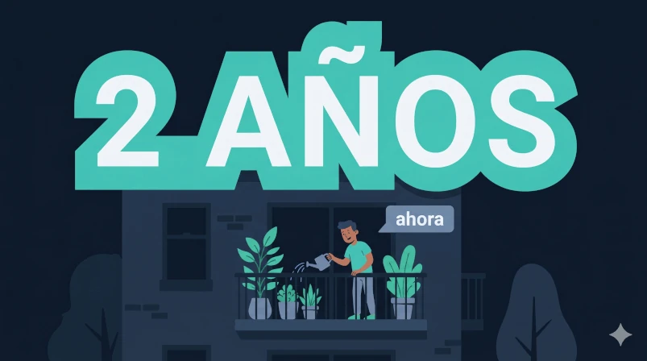
Presente · "for" (ongoing)
Hace dos años que vivo aquí.
I have lived here for two years.
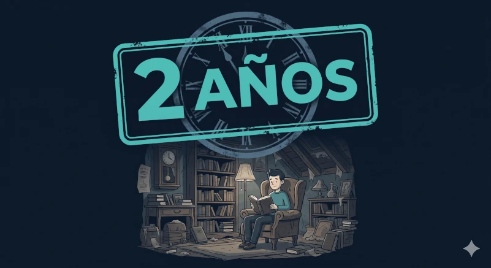
Imperfecto · "had been ___ for"
Hacía dos años que vivía allí.
I had been living there for two years.
Pretérito · "ago"
Hace dos años que viajé a España.
Two years ago I traveled to Spain.
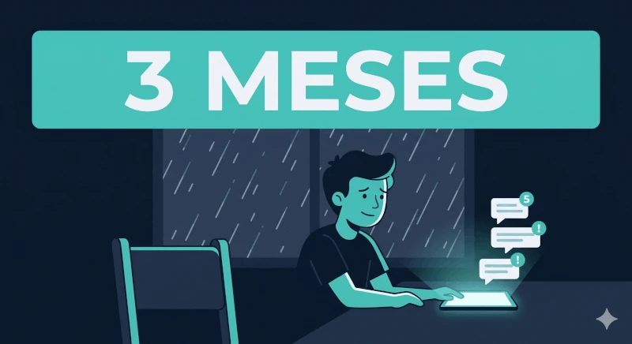
Negativo · "haven't ___ for"
Hace tres meses que no la veo.
I haven't seen her in three months.
⑤
desde que
"SINCE [EVENT]" — LINKING CLAUSE
desde que + cláusula = starting point. The main clause extends from that event to the reference moment. The tense after desde que depends on the kind of event.
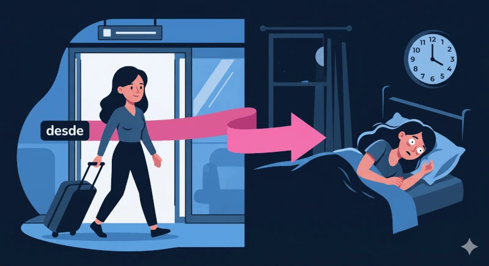
Pretérito · specific past event
Desde que llegué, no he dormido bien.
Since I arrived, I haven't slept well.
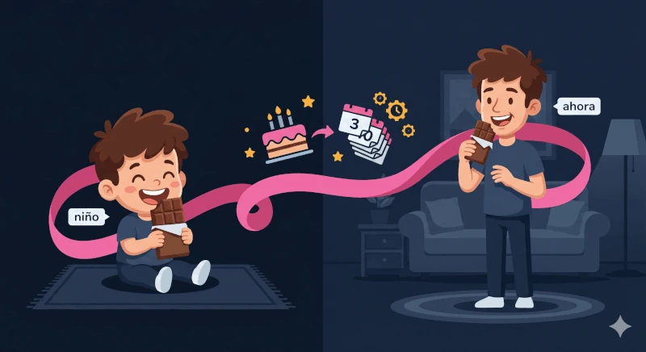
Imperfecto · habitual / ongoing past state
Desde que era niño, me gusta el chocolate.
Ever since I was a child, I've liked chocolate.
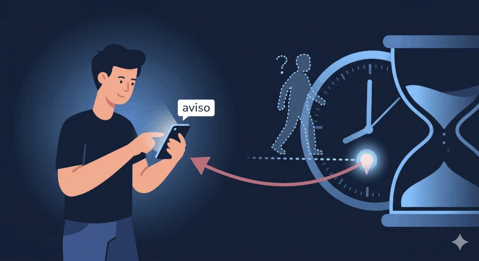
Subjuntivo · raro
Desde que llegue, te aviso.
The moment he arrives, I'll let you know.
NOTA*Use sparingly.desde que + subjuntivo for future triggers is grammatically valid but uncommon. Native speakers almost always prefer en cuanto or tan pronto como + subjuntivo for this meaning:
En cuanto llegue, te aviso. · Tan pronto como llegue, te aviso.
⑥
llevar + tiempo + gerundio
SPOKEN EQUIVALENT OF DESDE HACE
In everyday speech, llevar + tiempo + gerundio often replaces desde hace. The subject of llevar is the person, and the time amount sits between llevar and the gerund. For the negative, use llevar + tiempo + sin + infinitivo.
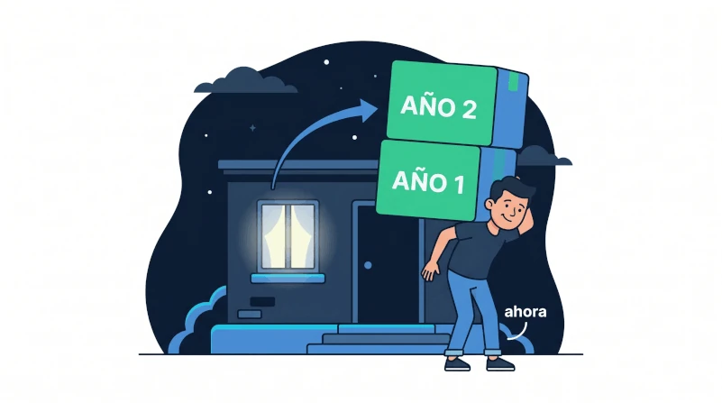
Presente · "have been ___ for"
Llevo dos años viviendo aquí.
I have been living here for two years. (= Vivo aquí desde hace dos años.)
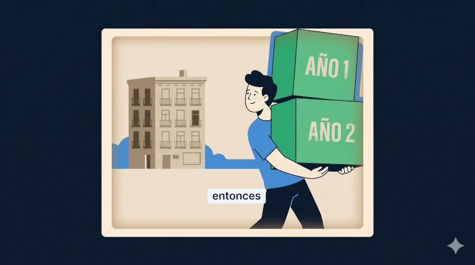
Imperfecto · "had been ___ for"
Llevaba dos años viviendo allí.
I had been living there for two years. (= Vivía allí desde hacía dos años.)
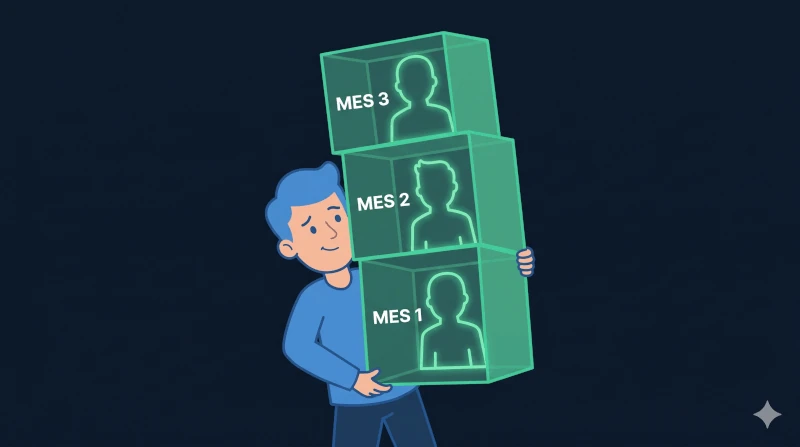
Negativo · sin + infinitivo
Llevo tres meses sin verla.
I haven't seen her for three months. (= No la veo desde hace tres meses.)
⑦
hacía + pluscuamperfecto
"AGO" FROM A PAST ANCHOR — COMPLETING THE SYMMETRY
The past-anchored mirror of Card 2. Just as hace + pretérito points to a moment behind now, hacía + pluscuamperfecto points to a moment behind a past anchor. This card completes the full system — every other construction on this page is one of its four quadrants.
NOTA*Watch the symmetry now click into place. The tense ofhacer sets the anchor (now vs past moment). The tense of the main verb sets the meaning (punctual = "ago", ongoing = "for"). Two axes, four quadrants — every hace/hacía construction on this page lives in one of these cells.
Anchor = now
Anchor = past moment
Point in past ("ago")
hace + pretéritoMurió hace un año."She died one year ago."
hacía + pluscuamperfectoHabía muerto hacía un año."She had died one year earlier."
Duration ("for")
(desde) hace + presenteVivo aquí (desde) hace dos años."I've lived here for 2 years."
(desde) hacía + imperfectoVivía allí (desde) hacía dos años."I had been living there for 2 years."
Footnote — Spain. In peninsular Spanish, hace + pretérito perfecto compuesto often replaces hace + pretérito for recent past events: He llegado hace cinco minutos ("I arrived five minutes ago"). It functions identically to the pretérito version — completion of the event is what triggers the "ago" reading, and the present perfect is just another way Spanish flags completion. In neutral Latin American Spanish, the pretérito form (Llegué hace cinco minutos) is overwhelmingly preferred.
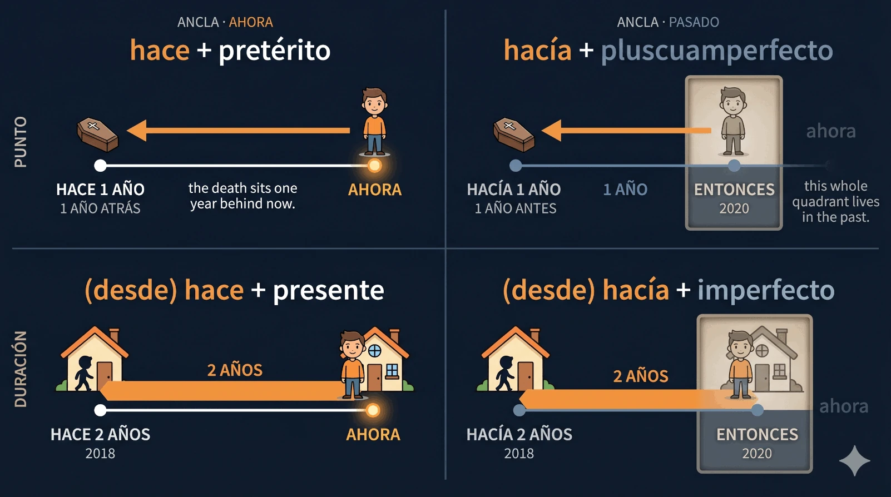
Las cuatro construcciones lado a lado — arriba, el evento puntual («ago» / «X earlier»); abajo, la duración («for» / «had been for»). Clic para ampliar.
Pluscuamperfecto · "X earlier" from a past anchor
Cuando llegué a su casa, su esposa había muerto hacía un año.
When I arrived at his house, his wife had died one year earlier.
Pluscuamperfecto · otro ejemplo
En 2020, me había comido una manzana hacía dos años.
In 2020, I had eaten an apple two years earlier. (The eating sits in 2018, two years before the 2020 anchor.)
NOTA*Register.pluscuamperfecto + hacía is most common in narrative prose and formal speech. In everyday conversation, speakers often restructure with dos años antes instead: se había mudado dos años antes. Both are correct — Spanish gives you the choice, the way English offers "two years earlier" or "before that".